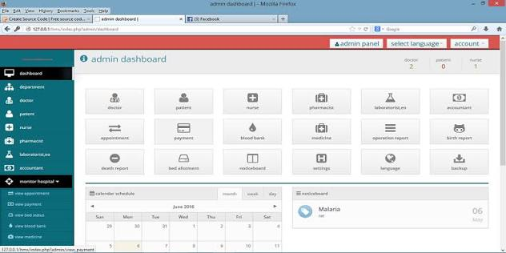
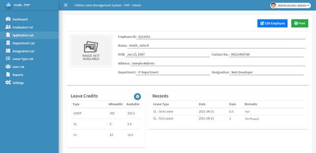
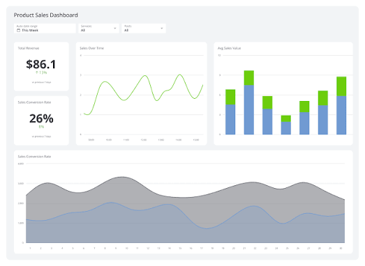
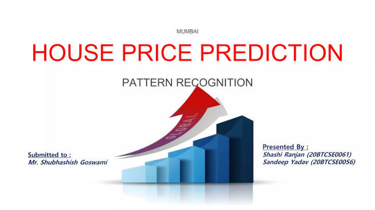

Hello, I'm
Ben Githua Ng'ang'a
I build scalable software, intelligent web applications, and data-driven solutions that solve real-world problems.

Hello, I'm
I build scalable software, intelligent web applications, and data-driven solutions that solve real-world problems.
I'm a Computer Science graduate passionate about building scalable software, intelligent data solutions, and modern web applications. My background spans software engineering, IT support, networking, database management, and data analytics. I enjoy solving real-world problems through technology while continuously learning new tools and frameworks.
Years Experience
Projects Planned
Professional Certifications
Technologies and tools I use to build software and data-driven solutions.
Software Engineering and Data Science projects showcasing my technical skills.
A smart parking management system with QR ticket generation, parking allocation, payment management, and an admin dashboard for analytics and reporting.

CompletedA web-based system that enables patients to book appointments, doctors to manage schedules, and administrators to oversee hospital operations efficiently.

CompletedA web-based leave management system that enables employees to apply for leave, managers to review and approve requests, and HR administrators to monitor leave balances, employee records, and generate comprehensive leave reports.

CompletedAn interactive dashboard that visualizes sales performance, revenue trends, customer behavior, and key business metrics to support data-driven decision-making.

CompletedA machine learning application that predicts house prices using property features such as location, size, bedrooms, bathrooms, and market trends.
A predictive analytics model that identifies customers likely to discontinue a service, enabling businesses to improve retention through data-driven strategies.
Explore my software engineering projects on GitHub and connect with me professionally on LinkedIn.
Passionate Software Engineer and Data Scientist focused on building scalable web applications, intelligent software solutions, and data-driven systems.
A progression from IT infrastructure and technical support into software engineering, web development, data and open-source technologies.
Design, develop and maintain web-based digital solutions, combining frontend development, backend programming, database management and deployment.
Worked remotely on short-term software development assignments, contributing to the development, maintenance and improvement of web applications.
Contribute to open-source software projects through documentation, issue resolution, code improvements and community-oriented development.
Gained hands-on experience supporting enterprise ICT infrastructure, networking, technical support and IT asset management within an operational environment.
Worked with field-collected data, supporting data registration, validation, analysis and reporting for social protection systems.
Supported election operations through electronic voter identification, registration processes and secure transmission of election data.
Designed, developed, and currently manage the parish website. Maintain the church's IT infrastructure including CCTV, networking, and public address systems while mentoring junior IT team members and supporting digital transformation initiatives.
Graduated with Second Class Honours. Developed a strong foundation in software engineering, databases, networking, artificial intelligence, operating systems, and data structures.
Finished with a B grade.
Professional certifications that demonstrate my continuous learning.
Software engineering principles, web development, databases, APIs and collaborative development.
Networking fundamentals, routing, switching and enterprise network technologies.
Professional graphic design, branding, digital content creation and visual communication.
Professional data analytics skills and techniques.
I'm open to Software Engineering, Data Science, Backend Development, and IT opportunities.